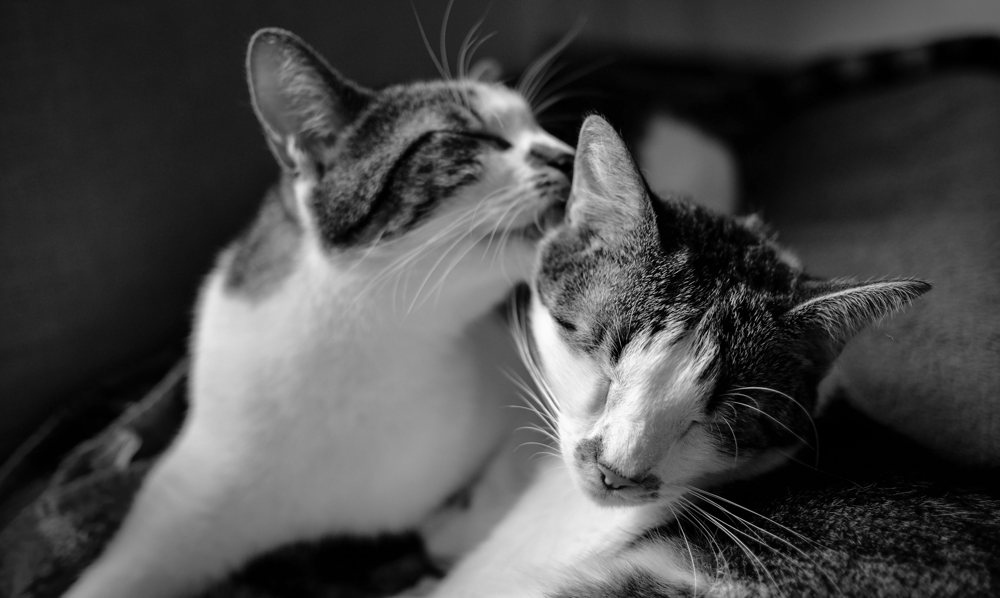

Sobre nós
Patas & Pelos é um Petshop completo que oferece uma ampla variedade de produtos de alta qualidade para animais de estimação. O Petshop se destaca em oferecer o melhor atendimento personalizado e serviços diferenciados para os clientes e seus animais. Entre os produtos, nós oferecemos:
- Alimentos para animais: o Petshop oferece diversas opções de rações e alimentos para animais de diferentes raças, idades e necessidades alimentares, incluindo alimentos naturais e orgânicos.
- Acessórios para pets: o Petshop disponibiliza uma grande variedade de acessórios para pets, como coleiras, caminhas, brinquedos, caixas de transporte, comedouros e bebedouros, entre outros.
- Produtos de higiene e cuidados pessoais: o Patas & Pelos oferece uma ampla variedade de produtos para cuidados pessoais de animais, como shampoos, condicionadores, escovas, toalhas, perfumes e produtos para higiene bucal.
- Serviços de banho e tosa: o Petshop oferece serviços de banho e tosa para animais, realizados por profissionais experientes e qualificados, utilizando produtos de alta qualidade e equipamentos modernos.
- Serviços de adoção: o Patas & Pelos também oferece serviços para quem quiser adotar o seu bichinho, com acomodações confortáveis e seguras, alimentação adequada e acompanhamento profissional durante todo o período de adoção.
No Patas & Pelos, os clientes encontram uma ampla variedade de produtos e serviços para seus animais de estimação, além da alta qualidade e segurança fornecidos pelos nosso funcionários.
Nosso time
Vinícius Matheus
CEO
Leonardo Brito
Administrador
Alinny Ribeiro
Gerente
Claudia Lopes
Veterinária